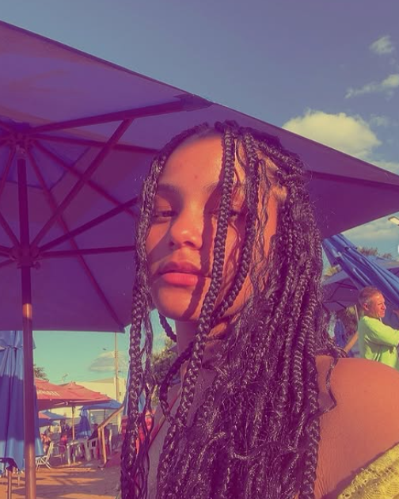
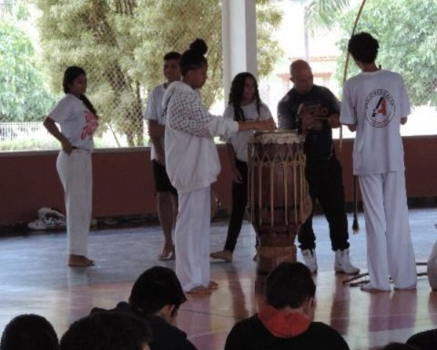
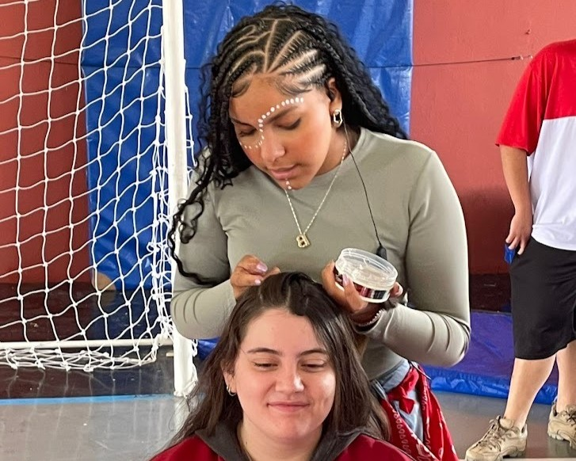
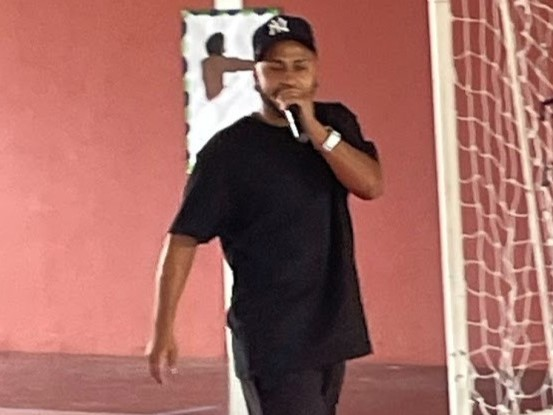

Anna Beatriz do Nascimento
Ancestralidade, Voz e Protagonismo: A Força e o Movimento do Projeto de Anna Beatriz
Com apenas 17 anos e estudante do 3º ano B do Ensino Médio, Anna Beatriz do Nascimento mostra que a juventude tem poder de liderança e transformação. Para ela, a busca por valorizar suas origens não é apenas um trabalho acadêmico — é uma missão que resgata a história de sua própria família.
Descendente de pai e avó negros, Anna aprendeu no convívio familiar o valor da ancestralidade e da cultura. Tendo crescido em uma região onde a diversidade cultural nem sempre encontrou o espaço merecido no ambiente escolar, ela decidiu transformá-la no motor principal do seu projeto.
Batizado de "Negritude em Movimento", o projeto é idealizado e liderado com protagonismo estudantil, contando com uma comissão dedicada de integrantes. O objetivo central é explorar a expressão da negritude através da arte, da cultura, do movimento e da estética, levando o conhecimento sobre diversidade cultural e equidade racial para crianças e jovens, ultrapassando os muros da própria escola.
"Geralmente, quando uma mulher tem o poder da fala, muitas pessoas acham que o que ela está falando não é sério. Eu acho que, se um homem falasse o que a gente fala sobre esse projeto, seria bem mais visualizado. Mas a gente não desiste." — Anna Beatriz, sobre os desafios e a persistência na liderança feminina
Ações Práticas e Vivências Culturais no Chão da Escola
O projeto não se limita a debates teóricos: ele ganha vida por meio de oficinas interativas, vivências artísticas e apresentações de mestres e artistas que conectam a comunidade escolar diretamente às raízes afro-brasileiras e periféricas:
- Roda de Capoeira e História: Em parceria com o grupo Capoeira em Ação, liderado pelo Mestre Michel, os estudantes aprenderam sobre a origem e a história dessa manifestação cultural afro-brasileira, participando ativamente da roda com música e movimento.
- Oficinas de Tranças e Estética Afro: Com foco na valorização da identidade e no protagonismo feminino, alunas voluntárias assumiram o comando de oficinas práticas de tranças, compartilhando técnicas e a importância histórica dessa estética.
- Cultura Hip Hop e Dança de Rua: O MC José (José MC) compartilhou músicas autorais e ensinou sobre a história do Break e a vivência do Hip Hop de rua, usando a arte como ferramenta de expressão e representatividade.
- Pintura Facial e Expressão Artística: Alunos voluntários criaram pinturas faciais de inspiração étnica e cultural, transformando o ambiente escolar num espaço mais acolhedor, integrador e participativo.
Registros das Ações do Projeto

Roda de Capoeira e Vivência Cultural
Oficina de Tranças e Estética Afro
Cultura Hip Hop e Arte na EscolaPara Anna Beatriz, iniciar esse trabalho de conscientização cultural e estética desde a infância é o caminho mais eficaz para construir uma sociedade sem preconceitos. Ela defende que, ao entrarem em contato desde cedo com noções de raça, etnia e pluralidade cultural, as crianças e adolescentes crescem mais empáticos, seguros e respeitosos.
As grandes referências que impulsionam a determinação de Anna vêm de duas fontes: no âmbito histórico, sua inspiração é Harriet Tubman, ativista norte-americana que arriscou a vida repetidas vezes para libertar famílias da escravidão. No plano pessoal, sua grande referência é a mãe, cuja resiliência e apoio incondicional motivam Anna a não desistir.
Olhando para o futuro, Anna Beatriz e a equipe do projeto mostram que o movimento continua forte e expandindo seus horizontes para inspirar outras escolas e comunidades.
Para todas as jovens estudantes, a aluna deixa um recado poderoso sobre união, coragem e autoafirmação: